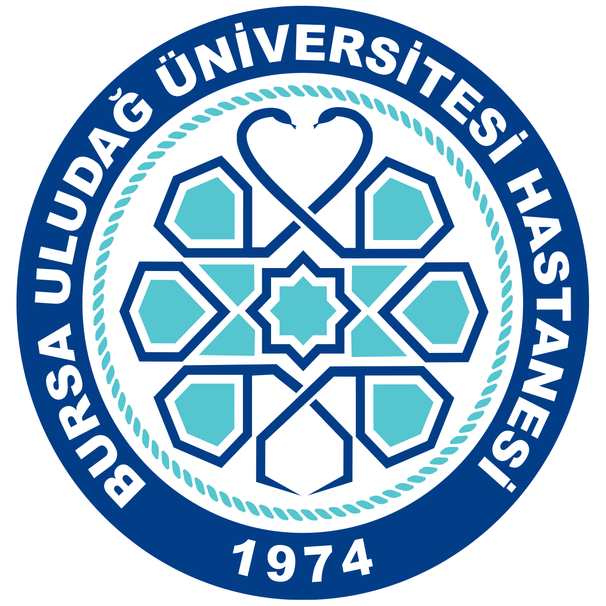
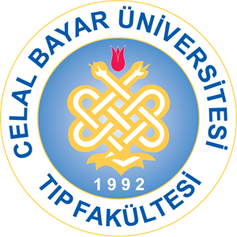
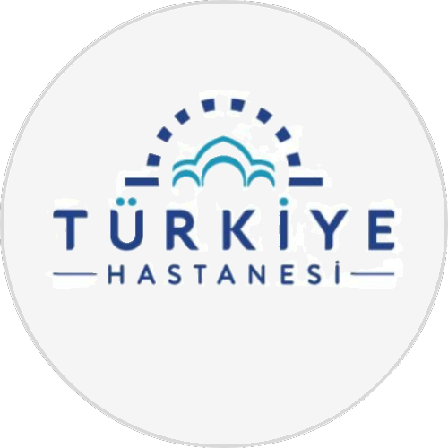

Azerbaycan Tıp Üniversitesi
Eylül 2010 - Haziran 2016
Merhaba! Ben Bakü doğumlu bir kadın hastalıkları ve doğum uzmanıyım.
İlköğretim ve lise eğitimimi Bakü’de tamamladıktan sonra tıp fakültesine giriş
yaparak Azerbaycan Tıp Üniversitesi Tıp Fakültesi’nden mezun oldum.
Tıp alanındaki tutkum ve kadın sağlığına olan ilgim beni tüm zorluklarına
rağmen kadın hastalıkları ve doğum alanında uzmanlaşmaya yönlendirdi.

Uludağ Üniversitesi Tıp Fakültesi
Haziran 2018 - Şubat 2019
Seviye Tespit Sınavı'nı başarıyla geçtikten sonra, 8 aylık bir süreç boyunca
Uludağ Üniversitesi Tıp Fakültesi Hastanesi'nde görev aldım. Bu süre zarfında
klinik deneyimlerimi pekiştirerek, hasta yönetimi, teşhis ve tedavi süreçlerinde
aktif olarak rol aldım. Akademik bilgi birikimimi sahada uygulama fırsatı bulduğum
bu dönem, mesleki gelişimim açısından oldukça değerli bir deneyim oldu.

Manisa Celal Bayar Üniversitesi Tıp Fakültesi
Aralık 2019 - Mart 2024
Kadın Hastalıkları ve Doğum ihtisasımı Manisanın’nın köklü hastanelerinden biri olan
Celal Bayar Üniversitesi Hafsa Sultan Hastanesinde tamamladım. Bu süre boyunca geniş
bir klinik deneyim kazanarak, kadınların sağlıklarını korumaları, gebelik süreçlerini
takip etmeleri ve sağlıklı bir doğum gerçekleştirmeleri konularında uzmanlaştım ve bunun
yanında genital estetik konusuna olan ilgim sebebiyle bu konuda özel eğitimler alıp
kendimi geliştirdim.

Özel Erdem Hastanesi (Güneşli/İstanbul)
Ağustos 2024 - Mart 2025
Türkiye Hastanesi (Şişli/İstanbul)
Mart 2025
Bu süre boyunca birçok hastaya hizmet vererek, onların sağlık sorunlarına çözüm bulmaya
çalıştım, doğum süreçlerinde güvenli ve rahat bir deneyim yaşamalarını sağlamaya özen gösterdim,
ayrıca genital estetik isteği ile gelen tüm hastalarımı yüksek memnuniyet ile tedavi ettim.